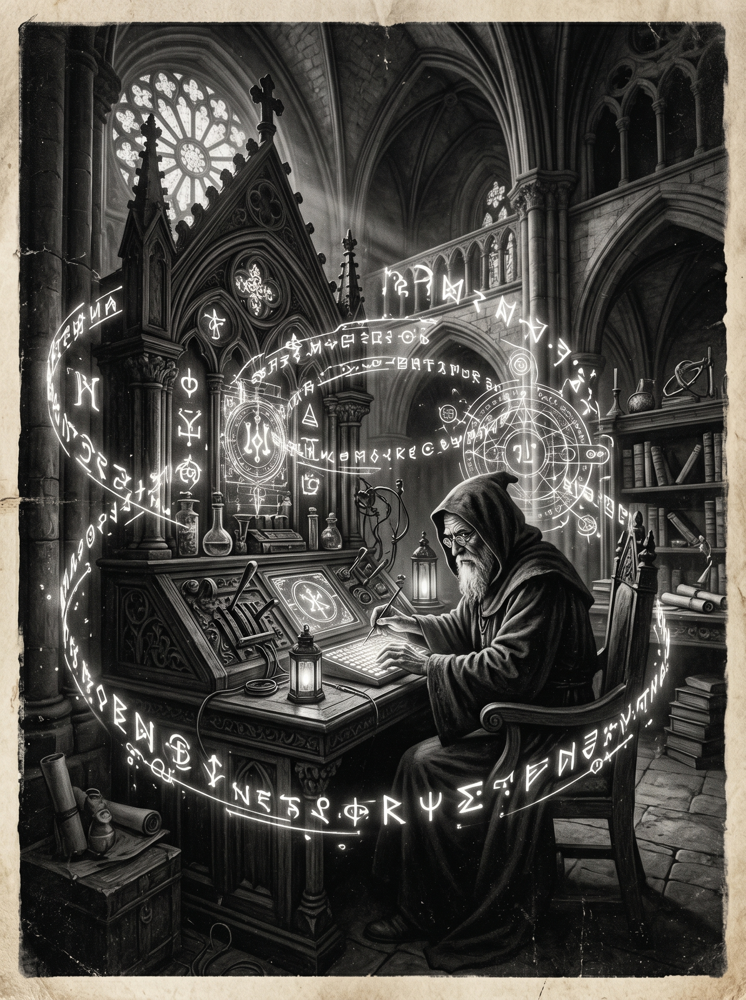

Morning Edition
6:00 AM CSTFinance & Markets
Markets Hold Steady as Investors Eye Iran Negotiations
U.S. stocks closed mixed Monday — Dow at 49,442 (-0.01%), S&P 500 at 7,109 (-0.24%), Nasdaq at 24,404 (-0.26%), while Russell 2000 climbed +0.58%. Energy stocks continue to benefit from elevated oil prices tied to Strait of Hormuz tensions.
— Source: Google Finance / Reuters, April 20, 2026PE Dry Powder Hits Record as Deal Activity Accelerates
Private equity firms are sitting on record levels of undeployed capital and beginning to deploy aggressively into tech and cross-border acquisitions. J.P. Morgan reports renewed M&A appetite across all sectors in early 2026.
— Source: J.P. Morgan, April 2026AI-Generated Music Nears 50% of New Uploads
Deezer reports that AI-generated music accounts for nearly half of all new song uploads to its platform, raising urgent questions about royalties, attribution, and the future of human artistry in the streaming era.
— Source: The Verge / Deezer, April 21, 2026World & US
UN Secretary-General Candidates Face Live Hearings
Four candidates vying to become the next UN Secretary-General face live hearings Tuesday and Wednesday. The next leader will steer the global body through an era defined by war, AI disruption, and climate urgency.
— Source: Reuters, April 21, 2026Japan Overhauls Defence Export Rules in Historic Shift
Japan unveiled its biggest overhaul of defence export rules in decades, scrapping restrictions on overseas arms sales and opening the way for exports of warships, missiles, and other weapons — a watershed moment for its post-war pacifist stance.
— Source: Reuters, April 21, 2026
The Tuesday Oracle: An Alchemist Channels Starlight Through Ancient Circuit Boards.
"Sagittarius, Tuesday crackles with sensual and creative energy. The stars say you're magnetic today — strangers notice, collaborators lean in. As a Rat-born Archer, your resourcefulness turns every glance into a connection and every conversation into a doorway. Don't hold back from what (or who) you want. Ship the feature. Send the message. Buy the cologne. The universe is routing opportunity through you today. Just don't rush — patience pays more than speed this cycle."— Tuesday's Developer Chronicle
Sagittarius Horoscope
Sex and romance are top priority for you today, Sagittarius. You're looking especially beautiful, feeling especially sensual, and you could well attract admiring looks from strangers. You might want to indulge in some new clothes or perhaps new cologne. This is definitely the perfect day to schedule an intimate evening with a love partner. Your Rat-born charm makes you impossible to ignore. Lucky numbers: 7, 21, 33. Lucky color: Midnight Gold. ✨
— Source: Horoscope.com, April 21, 2026Tech & AI Highlights
-
Tim Cook Steps Down — John Ternus Named Apple CEO
Apple announced Tim Cook will become Executive Chairman, with hardware chief John Ternus taking over as CEO. The transition marks the end of a defining era and signals Apple's hardware-first DNA will deepen. (1,838 HN points, 989 comments)
— Source: Apple Newsroom / Hacker News, April 20, 2026 -
A Roblox Cheat and One AI Tool Brought Down Vercel's Platform
An exploit combining a Roblox cheat tool and AI-generated code caused a widespread outage on Vercel's deployment platform — a cautionary tale about the intersection of automated tooling and infrastructure resilience.
— Source: Hacker News, April 21, 2026 -
How to Make a Fast Dynamic Language Interpreter
A deep technical writeup on building high-performance interpreters for dynamic languages, gaining traction across the dev community for its clarity and practical benchmarking approach.
— Source: zef-lang.dev / Hacker News, April 21, 2026
Markets Snapshot
- Dow Jones: 49,442 (Mon close, -0.01%)
- S&P 500: 7,109 (Mon close, -0.24%)
- Nasdaq: 24,404 (Mon close, -0.26%)
- Russell 2000: 2,793 (+0.58%)
- Oil: Elevated on Hormuz tensions
Active Reminders
- Build Oomi iOS and Android app
- Plaid Integration Research
- Connect Nemu to Notion
- Research VPN/proxy services
- Create security OpenClaw bot